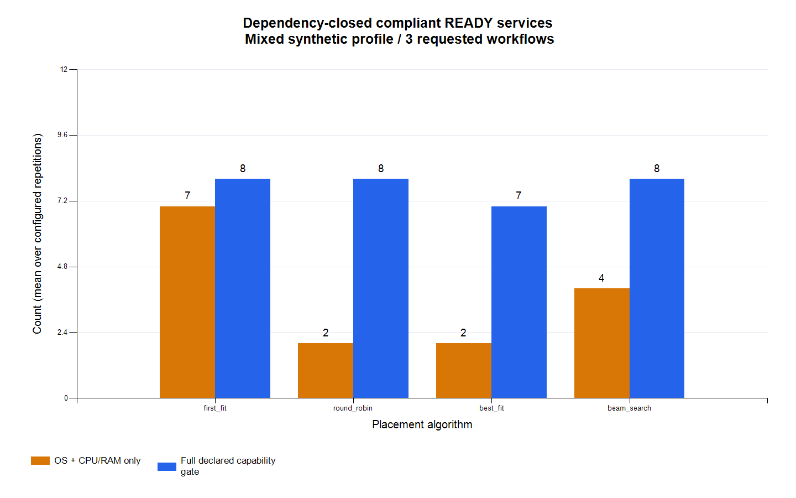
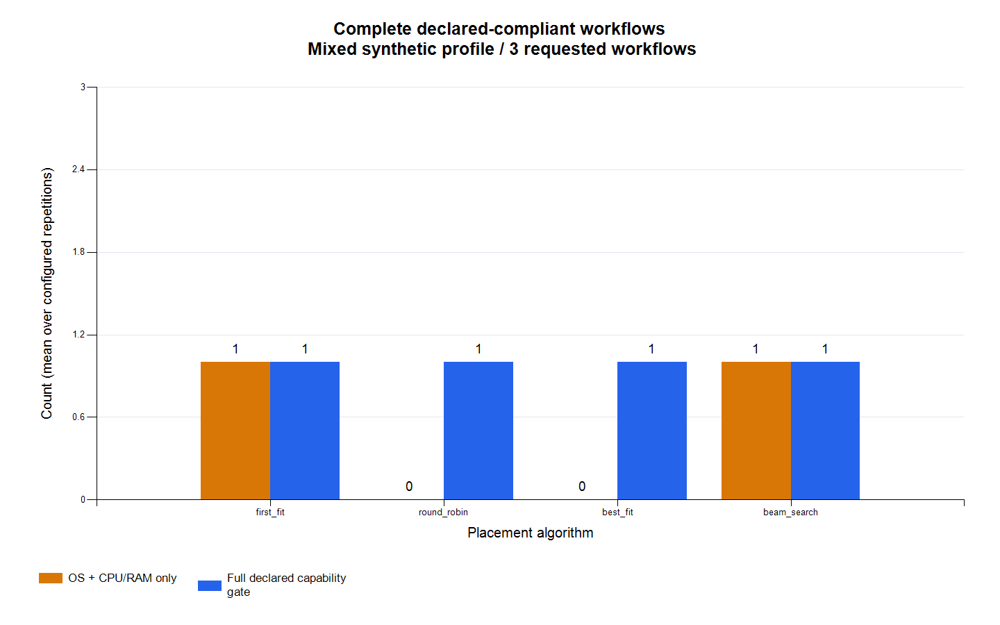
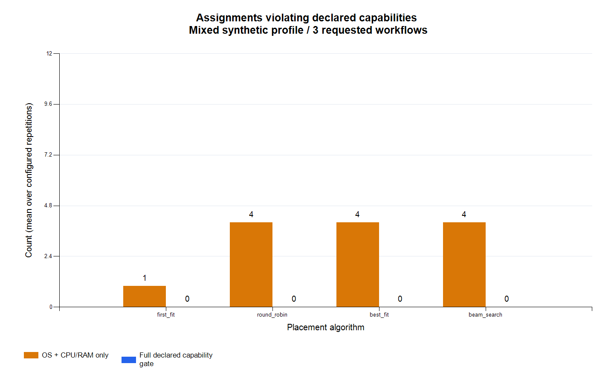
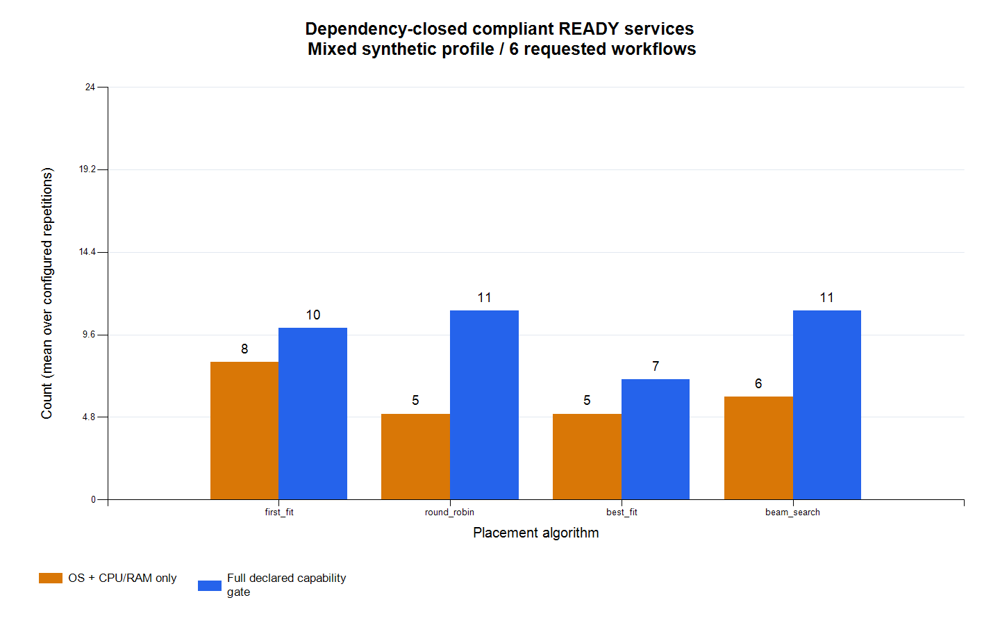
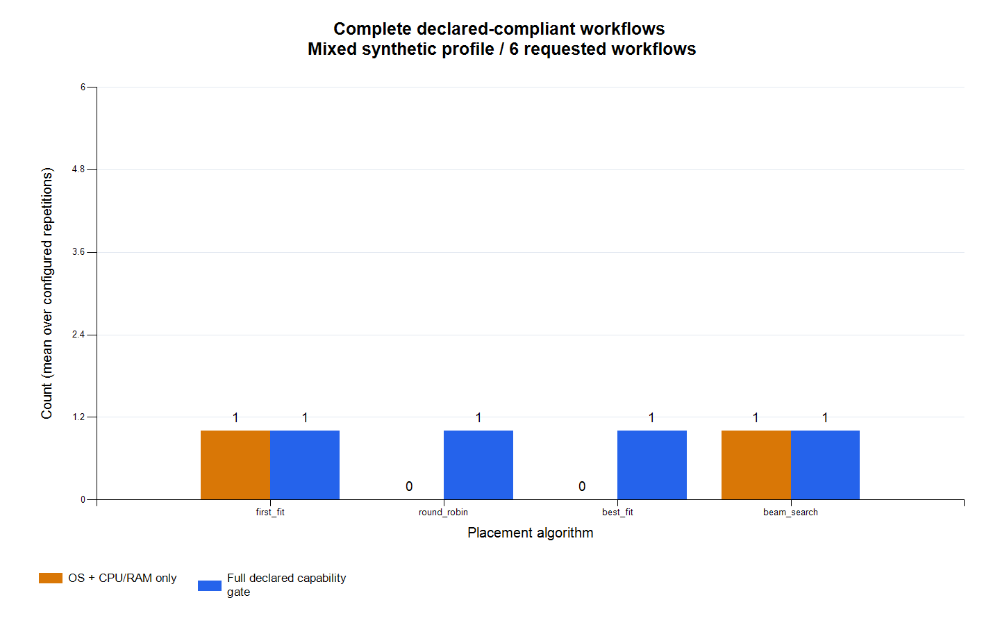
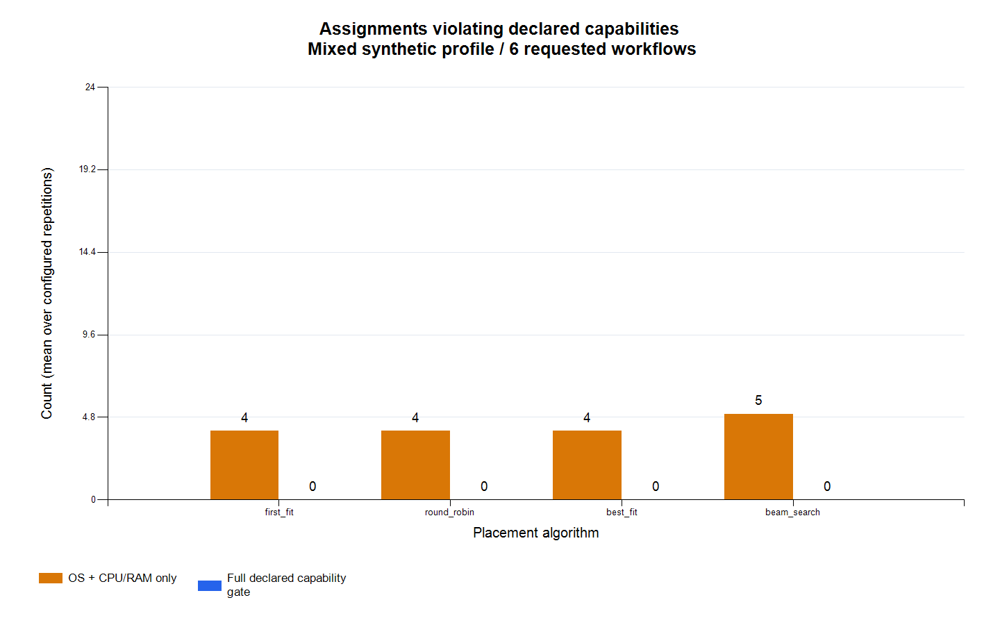

平台能力约束与部署审计
批次：20261020-134623-4dd2fe33；束宽：64；固定chain布局；每组1次。
结果概览已完成32次运行。16/16项对照核查通过。mixed场景关闭能力门控时，8/8组存在声明能力违规；启用完整门控后，所有组零违规：True。合规就绪还要求全部上游依赖合规；数量减少不自动代表算法退化，数量增加也不自动代表实际平台可运行。
模型声明与对照
uniform：每个节点具有其OS对应架构/运行环境、四项逻辑API、传感器驱动和三项安全标签，作为新增检查的阴性对照。mixed：仅改变下表能力；节点容量、服务资源需求及事件时延沿用原模型。全部四种算法共享同一个CompatibilityChecker。
| 节点 | mixed相对uniform的变化 | 可触发原因 |
|---|
| linux-02 | X86_64 → ARM64，Linux服务包仍声明X86_64 | ARCH_MISMATCH |
| win-02 | 无WINDOWS_CONTAINER运行环境 | RUNTIME_UNSUPPORTED |
| vx-02 | 缺FILTER_API、SENSOR_DRIVER、TLS_NETWORK | API_MISSING、DRIVER_MISSING、SECURITY_POLICY_MISMATCH |
collect要求SENSOR_API/SENSOR_DRIVER/签名与TLS；preprocess要求FILTER_API/签名；detect要求INFERENCE_API/签名与可信节点；alert要求ALERT_API/签名与TLS。每种版本另要求其架构和运行环境。API/驱动是本实验抽象契约名，未声称具体厂商实现支持。
就绪指标口径
模型就绪：原事件模型的READY。局部合规：本部署本身满足五类能力声明。合规就绪：READY且自身、所有上游依赖均合规。合规完整链：整条依赖连通业务链均合规就绪。依赖阻断：自身局部合规却因上游不合规而未计入合规就绪。
完整结果
每组仅运行一次；规划耗时中位数等于本次观测，尚未验证重复一致性。
门控开关配对差异
所有差值为full减base，零值和负值均保留。服务数和链数相同也不保证服务身份相同，因此本报告不自动计算提速比例。
| 链数 | 场景 | 算法 | 模型就绪差 | 合规就绪差 | 合规完整链差 | 违规数差 |
|---|
| 3 | uniform | first_fit | 0 | 0 | 0 | 0 |
| 3 | mixed | first_fit | 0 | 1 | 0 | -1 |
| 3 | uniform | round_robin | 0 | 0 | 0 | 0 |
| 3 | mixed | round_robin | -2 | 6 | 1 | -4 |
| 3 | uniform | best_fit | 0 | 0 | 0 | 0 |
| 3 | mixed | best_fit | -3 | 5 | 1 | -4 |
| 3 | uniform | beam_search | 0 | 0 | 0 | 0 |
| 3 | mixed | beam_search | -2 | 4 | 0 | -4 |
| 6 | uniform | first_fit | 0 | 0 | 0 | 0 |
| 6 | mixed | first_fit | -3 | 2 | 0 | -4 |
| 6 | uniform | round_robin | 0 | 0 | 0 | 0 |
| 6 | mixed | round_robin | -2 | 6 | 1 | -4 |
| 6 | uniform | best_fit | 0 | 0 | 0 | 0 |
| 6 | mixed | best_fit | -6 | 2 | 1 | -4 |
| 6 | uniform | beam_search | 0 | 0 | 0 | 0 |
| 6 | mixed | beam_search | -2 | 5 | 0 | -5 |
关闭门控时的违规类别
仅mixed/base。每个类别统计涉及该类问题的部署项；同一项可有多类问题，各列相加可能大于违规项总数。未被选择的候选缺口见audits/*.candidates.csv。
| 链数 | 算法 | 架构 | 运行环境 | API | 驱动 | 安全能力 |
|---|
| 3 | first_fit | 1 | 0 | 0 | 0 | 0 |
| 3 | round_robin | 1 | 2 | 1 | 0 | 0 |
| 3 | best_fit | 1 | 2 | 1 | 0 | 0 |
| 3 | beam_search | 2 | 1 | 1 | 0 | 0 |
| 6 | first_fit | 1 | 2 | 1 | 0 | 0 |
| 6 | round_robin | 1 | 2 | 1 | 0 | 0 |
| 6 | best_fit | 1 | 2 | 1 | 0 | 0 |
| 6 | beam_search | 3 | 1 | 1 | 0 | 0 |
mixed场景配对图

c03-compliant-services.png

c03-compliant-workflows.png

c03-violations.png

c06-compliant-services.png

c06-compliant-workflows.png

c06-violations.png
适用范围
本模块使用固定合成声明。X86_64、ARM64、容器/RTP、API、驱动及安全标签均为模型字段。SIGNED_PACKAGE/TLS_NETWORK/TRUSTED_NODE只表示集合约束，未执行验签、TLS连接或可信启动。未探测真实设备、ABI、驱动或操作系统版本。原READY仅为离散事件状态；合规READY为该状态叠加声明和依赖闭包检查。部署时间仅覆盖已接纳服务，不能因任务减少直接宣称提速。资源预留不等于实测利用率；独立JVM未排除JIT/预热，计时仅作描述；不做显著性、真实跨平台成功率或普遍最优结论。
复核入口
runs.csv为逐次汇总；summary.csv为组内统计；paired-mode-effects.csv记录配对差值；control-checks.csv记录阴性对照。audits/*.assignments.csv逐项列出需求、节点能力、原因码和依赖闭包判定；*.candidates.csv覆盖所有服务版本与节点的初始容量候选，不含动态剩余容量。raw/保留原始模型指标；project/为独立实验副本；snapshot/及source-hashes.csv保留源码与脚本。manifest.json记录配置、状态与环境。
Material Passport: Origin Skill academic-research-suite / experiment-agent; Origin Mode code-experiment; Origin Date 2026-10-20; Verification Status LOCAL_GENERATED_DESCRIPTIVE; Version platform-study-v1. 人工阅读标记：未声明。